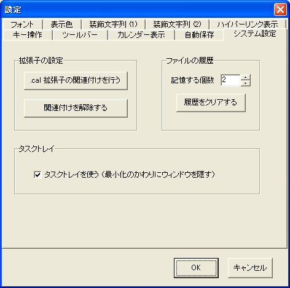

[システム設定]タブでは，Windows への拡張子の関連付け，開いたファイルの履歴管理，タスクトレイについての設定が可能です．
[.cal 拡張子の関連付けを行う] を選択すると， プログラムの関連付けが行われます． 関連付けた後に，プログラムの実行ファイルを移動した場合， 再度関連付けを行ってください．
[関連付けを解除する] を選択すると， プログラムの関連付けが解除されます． 通常，アンインストール時に使用します．
設定ダイアログの[拡張子の関連付け]タブから，開いたファイルの履歴 （[ファイル]メニューの一番下に表示されます）に追加される ファイルの最大数を設定することができます． 履歴を表示したくない場合には，0を指定してください．
また，ファイルを開いた履歴をクリアしたい場合は， [履歴をクリアする]を選択してください．
[タスクトレイを使う] にチェックを付けると，タスクトレイに hyCalendar のアイコンが表示されるようになります． ウィンドウを最小化したときにはタスクトレイに収納し， タスクバーからウィンドウの表示を消すことができます．
最小化から復帰するには，タスクトレイアイコンを左クリックしてください． アイコンを右クリックすると，現在の日時に対応した日の予定内容を 画面右下にポップアップ表示します． ポップアップは，もう一度アイコンを右クリックすると消えます．